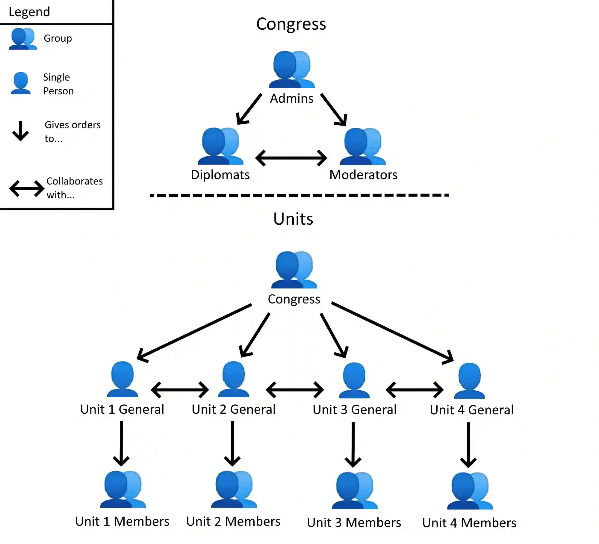

Hello, Traveler
Welcome to The Blue Corner's website! This website serves many purposes. From information to overlays, we have it all! Is an event going on? You can find updates in the Discord or in the subreddit.
Who We Are
We are a group formed from Reddit's "Place" April Fools event.
The Blue Corner dedicates itself to a single purpose: making the bottom right corner of the canvas blue.
Our group is one of a few r/place communities that are not tied to any country or trademarked media.
We just like blue corners!
Although the result stays the same, the process we use to accomplish the blue corner changes.
The Blue Corner started as a Reddit community.
Later, we moved to Discord and began establishing a chain of command.
To learn more about our history, click the button below.
To learn more about our chain of command, keep reading.
Our History
Diplomats
Is your community interested in allying with us? If you are a diplomat looking to form that alliance, join our Discord! We have a diplomatic channel through which we handle negotiations. If you are an official diplomat/staff member of your community, you can also request the "Official Foreign Diplomat" role. This role helps speed up processing future requests made by your community. Diplomat Channel
Chain of Command
Our chain of command consists of two layers: Congress and Units. Each layer has its own leaders who actively collaborate with other groups in the same layer. People in a group take orders from their leader. The leader takes orders from higher-ranking layers. Unit leaders are called "Generals."
Congress
Congress is the highest-ranking layer.
Its job is to govern and provide direction during events, ensuring they run smoothly.
Although it may seem simple, this requires a lot of experience and communication.
Congress: Staff
The leading body of Congress is the community's Admins.
Staff in this position are excellent at leadership and handling high-stress situations.
They embody The Blue Corner's core values and keep the community a fun place for everyone.
Their job is to manage The Blue Corner community, discuss problems, and decide what path the community should take.
Congress: Diplomats
The role of diplomats is to gather and maintain healthy alliances with other communities.
This group excels in communication and professionalism.
They are allowed to speak on behalf of The Blue Corner and have a deep understanding of its values.
The job of a diplomat consists of reaching out to communities to foster an alliance.
They also serve as a bridge for allies to speak to The Blue Corner.
Diplomats commonly receive and relay requests made by allies.
Diplomats also advise Congress on decisions that may affect allies of The Blue Corner.
Congress: Moderators
The role of the Moderators is to manage certain aspects of the community whenever the Admins cannot.
Moderating chat, posting on social media, and assisting the Voice Call channel, jobs assigned to members of this group greatly vary.
Moderators also serve as a "beacon" dedicated to keeping The Blue Corner a safe and collaborative environment.
They also act as a go-between for the community, discussing innovative ideas created by the community with Congress.
Units
Scout107 created the "Unit" system.
A "Unit" is a small group dedicated to completing a single task.
These groups are highly informal.
In 2024, unit leaders were named "Generals."
Anyone can join or leave a Unit or be in multiple Units simultaneously.
In addition, a Unit may not have a General (or may have several Generals).
However, Generals are always Congress members.
Leaders of Units (or Congress) may temporarily assign Units to work on a specific mission unrelated to their Unit's primary purpose.
Units: Unit 1 (True Corner Knights)
This Unit is the core Unit of the four. The purpose of this group is to keep the bottom right corner pixel blue. Led by Scout107, Unit 1 defends against constant attacks. This Unit is more relaxed than others. Although it requires little communication or coordination, all appreciate this Unit. Previous generals of this Unit were: Scout107.
Units: Unit 2 (Logo Knights)
This Unit is the face of The Blue Corner and is responsible for maintaining the logo. The logo changes occasionally but always consists of the text "THEBLUECORNER." Led by SwingTheVine, this Unit defends against people looking to deface The Blue Corner. This Unit is fast-paced and requires lots of coordination. Using the overlay is recommended because the logo is detailed. Previous Generals of this Unit were: TheStruggleIsALie.
Units: Unit 3 (Border Knights)
This Unit is responsible for maintaining the border of The Blue Corner's territory. Led by Nexiy, this group is responsible for keeping the border pixels blue. In addition, if the border encroaches on our neighbor's territory, this group helps repair their art. They also repair any hearts that form on our border with our neighbors. This Unit does not require a lot of coordination. However, it requires a lot of communication. As the border spans a giant area, it requires diligence in observing different regions of the border to ensure they are intact.
Units: Unit 4 (Knights of the Field)
This Unit is the body of The Blue Corner. It is responsible for maintaining the sea of blue within our territory. This job excludes the bottom right corner pixel which Unit 1 is responsible for. This Unit, which is responsible for an enormous area, requires a lot of communication and coordination to clean it. In addition, this Unit frequently assists other Units and is frequently reassigned to other tasks by Congress.